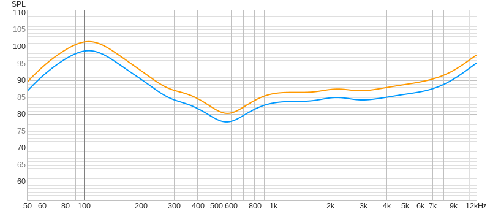
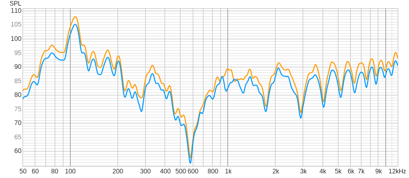

Starting off right
This guide covers the validation and calibration process for the Nosey MEMS Nasometer using Room EQ Wizard (REW).
Room EQ Wizard (REW) is open-source acoustical measurement software commonly used for measuring room acoustics, frequency response of speakers and microphones, and audio circuit characteristics. It is available for Windows, macOS, and Linux.
Calibration Process Summary
The following steps verify that the L-Nasality and R-Orality microphones have matched frequency responses:
- Setup audio interface: Connect both Nosey MEMS channels to a USB audio interface with phantom power (+48V) enabled. Verify signal input in the system audio settings.
- Position the device: Mount the Nosey MEMS approximately 5 cm from a loudspeaker or studio monitor in a stable position.
- Run frequency sweeps: Use REW to perform frequency sweep measurements on both the L and R channels across the audible spectrum (20 Hz - 20 kHz).
- Compare responses: Analyze the frequency response curves to verify that both microphones track each other closely. Well-matched microphones are essential for accurate nasalance ratio calculations.
- Optional calibration: Export the frequency response data to apply correction filters to raw audio recordings before performing nasalance calculations.
Note: For basic nasalance measurements (ratio-based), absolute SPL calibration is not required. The critical factor is that both microphones have matched relative frequency responses.
Setting up REW
This guide covers the installation of Room EQ Wizard (REW) on Linux Mint and configuration with a USB audio interface.
Installation Steps
1. Download REW
Download the no-JRE installer from the official REW website:
REW_linux_no_jre_5_31_3.sh2. Install Java 8
The REW installer specifically requires Java 8, even though REW itself runs fine on newer versions:
sudo apt install openjdk-8-jre3. Run the Installer
Point the installer to the Java 8 installation:
INSTALL4J_JAVA_HOME=/usr/lib/jvm/java-8-openjdk-amd64 ./REW_linux_no_jre_5_31_3.shFollow the graphical installer prompts to complete the installation.
Audio Interface Setup
This example uses a Behringer UMC404HD USB audio interface. The process is similar for other USB audio interfaces.
1. Connect the Audio Interface
Connect the USB audio interface and allow the system to recognize it.
2. Open PulseAudio Volume Control
Launch pavucontrol from the terminal or application menu:
pavucontrolIf not installed, install it first:
sudo apt install pavucontrol3. Configure the Audio Profile
In pavucontrol, navigate to the Configuration tab:
- Locate the audio interface (e.g., "UMC404HD 192k")
- Change the profile dropdown to Output + Input (or "Analog Stereo Duplex")
- This enables both recording and playback through the interface
4. Verify Input (Microphone)
Switch to the Input Devices tab:
- Locate the audio interface input
- Generate test audio near the microphone
- Verify the green level meter responds to sound
- Adjust the input volume slider as needed
5. Verify Output (Studio Monitors)
Switch to the Output Devices tab:
- Locate the audio interface output
- Play test audio (music, system sounds, etc.)
- Confirm sound outputs through the studio monitors connected to the interface
- Adjust the output volume slider as needed
6. Configure REW
In Room EQ Wizard, navigate to Preferences → Soundcard:
- Set Input Device to the audio interface (e.g., "UMC404HD")
- Set Output Device to the same interface
- Click OK to save the configuration
💡 Troubleshooting Tips:
- If the audio interface doesn't appear in REW, restart the application
- Use
pavucontrolto verify the device is recognized and set to "Analog Stereo Duplex" - The Java 8 requirement is only for the installer — REW runs fine on Java 17+ after installation
- Finding the Java path: If Java 8 is installed in a non-standard location, find it with:
Use the path up to (but not including)
readlink -f $(which java)/bin/javaas theINSTALL4J_JAVA_HOMEvalue
Tested on: Linux Mint 22.2 (Zara), based on Ubuntu 24.04
Frequency Response Testing
This step validates the Nosey MEMS microphones by verifying that both MEMS elements (L-Nasality and R-Orality) have matched frequency responses. Since microphones vary unit to unit, this verification ensures the device meets specifications.
Test Setup
A frequency sweep measurement is performed in REW without SPL calibration. The goal is to compare the relative frequency response between the left and right microphones, not to measure absolute sound pressure levels.
Performing the Sweep
- In REW, navigate to Measure and select the configured audio interface
- Choose the frequency sweep measurement type
- Set the sweep range (typically 20 Hz - 20 kHz)
- Position the Nosey MEMS at a consistent distance from the studio monitors
- Run the measurement for both L and R channels
Results
The plots below compare the frequency response of the L (orange) and R (blue) microphones with different smoothing levels applied:
1/1 Octave Smoothing
With maximum smoothing (1/1 octave), the frequency response shows:
- Clear bump at ~100 Hz — likely room mode or monitor resonance
- Significant dip at ~550 Hz — possible cancellation or room null
- Rising response from 8 kHz onwards — common MEMS characteristic
Note: The L and R traces are nearly identical, separated slightly for visibility.
1/12 Octave Smoothing
With reduced smoothing (1/12 octave), additional detail becomes visible:
- Peak at 100 Hz remains clear
- Dip at 550 Hz still present
- Combing artifacts from 3 kHz onwards — likely due to reflections
The increased detail reveals environmental factors, but the L and R microphones continue to track each other remarkably well.
Understanding the Imperfections
The frequency response deviations observed are expected given the test conditions:
- Uncalibrated studio monitors — frequency production response is unknown
- Desktop placement — monitors on the desk cause reflections and combing
- Untreated room — no acoustic treatment or controlled environment
- No SPL calibration — relative measurements only, not absolute levels
Interpretation
The two MEMS microphones (L-Nasality and R-Orality) demonstrate well-matched characteristics.
Despite environmental imperfections, both microphones exhibit nearly identical frequency responses. This matching is critical for nasalometry, which calculates the ratio between nasal and oral sound energy:
Nasalance = An / (Ao + An)Since both microphones experience the same acoustic environment and have matched responses, room-induced anomalies affect both channels equally and cancel out in the ratio calculation.
For nasality measurements based on energy ratios, this configuration should be adequate. Advanced calibration and a specialized sound booth would be required for absolute SPL measurements, but for relative nasalance calculations, the Nosey MEMS seems to meet the necessary specifications.